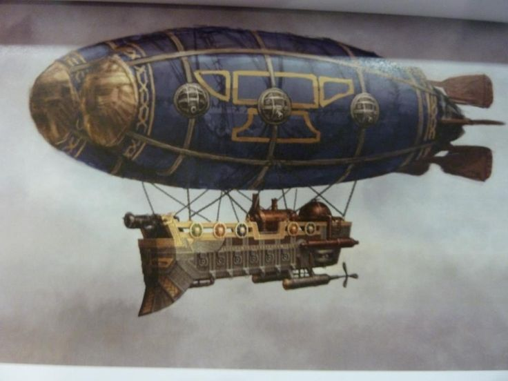
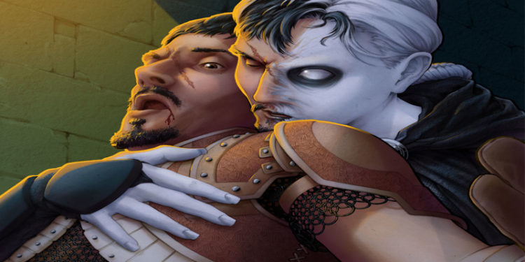
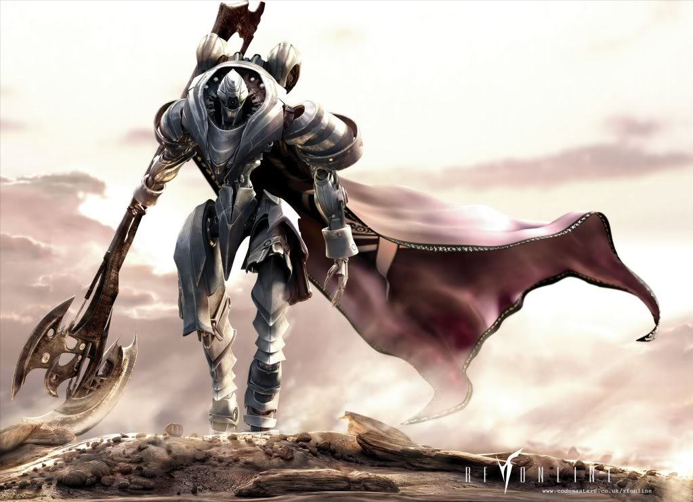
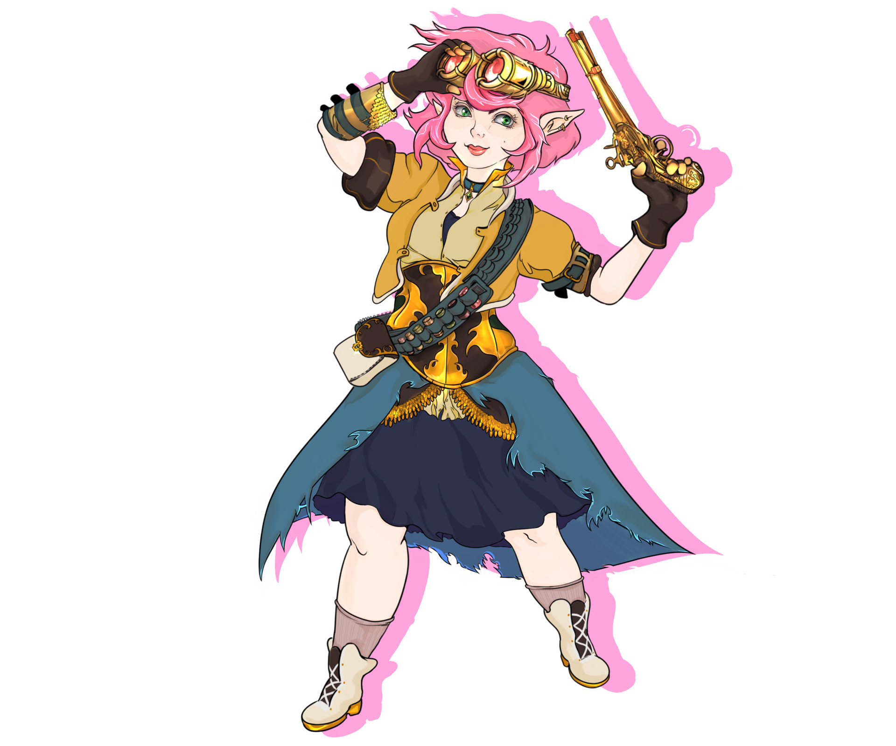
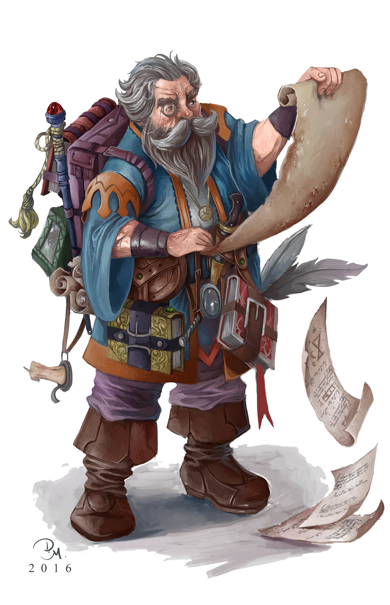

Where our story begins
Once the heart of Sharn, Lower Dura has slowly decayed as the rest of the city moved higher into the sky. Now it is a dark and dangerous place. Precarious and the Stores play important roles in the economy of the city, but the other districts have largely been left to fester and rot. Today, Lower Dura is home to the miserable poor. The Sharn Watch rarely risks patrolling Lower Dura, and the ward has become a center for criminal activities. The inhabitants of the ward may be shielded by gang allegiances, ties to one of the major criminal organizations, or the simple fact of having nothing to steal, but adventurers had best tread lightly and keep weapons near at hand when venturing here. Street violence occurs on a regular basis, amateur and professional cutpurses abound, and the Sharn Watch won’t do much to help. A drawn blade and a successful DC 15 Intimidate check made when entering the district keep most of the rabble away—of course, the more dangerous criminals may see this as challenge and a promise of worthy loot. In general, Lower Dura is a wretched place, and the city council does little to change that. Everburning torches light most of the district, as opposed to everbright lanterns, and in the worst neighborhoods many of the torches have been shattered or stolen. The ward shows its age, with cracked and worn streets, walls covered with mildew and graffiti, and other signs of neglect and wear and tear. Once Lower Dura was Sharn, and it included a garrison, manors for the city lords, a great temple, and other important buildings. Over the course of time these structures have been forgotten or repurposed. Lower Dura is full of the shadows of a glorious past that can barely be seen beneath the grime of the present.
Home to assortment of squalid and poor businesses known strong hold of Boromar Clan.
The Anvil: an inn that is known to be the headquarters of the Boromar Clan.
the councilor for Lower Dura
The Orc Bartender Seems way to happy to be bartending.
collection of wretched ruins of old temples
slums for desperate people
originally a goblin district now a district for monstrous immigrants along with members of Daask.
Dark Cap: a tailor shop
Slums populated with dock workers from Precarious
Warhouses and Cheap Taverns
Warehouse district and halfling district. (said to have ties with Boromar Clan)
Dagger and Plank: blacksmith shop, run by halflings but dwarven craftsmen.
The money system we are using is super simple.
1 copper = 1 penny
1 silver = 100 copper or a dollar
1 gold = 100 silver
1 platium = 100gold or 10,000 silver
Thinks are priced like this. 1.00.00.00
Prices for things are based on modern prices for things. So if you spend 10$ for a lunch, well that would be 10 silver. If a hotel cost 100$ a night, then that will be 1 gold or 100 silver.
Quite a few stereotypes about dwarves have been going around Khorvaire for as long as humans have been there about dwarves being Drunk, Greedy, and Rude. Very little was known about the Great Dwarf House of Kundarak. Dwarves who are found in every city through out Khorvaire, have been known to sing great songs and tell tales of the House Kundarak the last Great House. Long thought of as just stories. When the Last war broke out, and the battles grew near Icehorn Mountains. From the tallest mountain in the range, rose up from the mountain itself a fleet of airships, larger than ever thought possible. The fleet headed west over the seas. Leaving the remaining dwarves of Khorvaire to find homes among the cities of the other races to find work as they may.
Wildly untrusted. Some cities like Sharn. It is required for all changelings to wear a white arm band.
Wildly Untrusted. Signs are posted all over Sharn asking for all warforges to be accompanied by it's owner. Sharn is offering a rebate for each warforge brought to the your local guard house for 'disposal'
Zipp is the daughter of famed artificer and veteran of the last war Zapp Waywocket. An accomplished artificer in her own right, Zipp was in charge of her fathers curio shop while he was fighting in the war. After her father returned and saw what a great job she had done he continued to let her run the store. One day, one of her robotic inventions exploded destroying the shop and injuring her father. Disgraced, she left her home to travel Eberron as a correspondent of the Korranberg Chronicle and to regain her honor.
Vincent is pretty open about being a nobel as well as a knight who served but is always armed with a bottle if elvish wine to share and a powdered glove full of ball bearings ready for a duel.


Wren a changeling of many faces and many personalities ranging from the kind old grandmother Mildred grieving her grandson, to the cold experssionless slate of their true form. Now they seek cold justice willing to do whatever it takes to get what they want


A famous explorer. Author of many adventure books about his great deeds.
